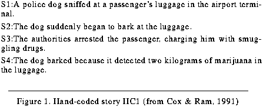
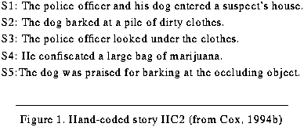
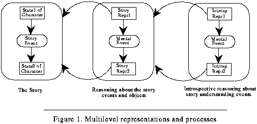
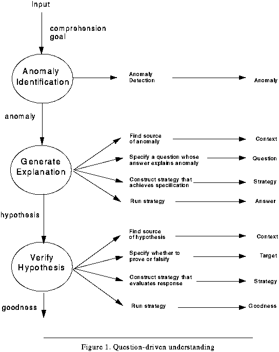

Table of Contents
Table of Contents
 Previous Chapter
Previous Chapter
Table of Contents
Previous Chapter
Two parts or sub-theories exist within any complete cognitive theory that claims to explain, describe, or predict intelligent behavior and reasoning. The content theory provides the vocabulary and structure for representing knowledge, as well as the ontology and content of the knowledge. Content theories provide a component theory that specifies the objects or components in the domain and the features that best describe the components. Also, a content theory provides constraints and inferential relationships between the features. Content theories therefore possess commitments to both domain ontology as well as domain physics in a body of knowledge (Domeshek, 1992). The process theory specifies the classes of transformations performed on such knowledge (Birnbaum, 1986; Domeshek, 1992). Moreover, a process theory is a functional theory if the processes are justified by some teleological commitment (i.e., if the theory defines a specific functional role for each process that contributes to the cognitive task for which the theory is offered as an explanation). Because the focus of this research is reasoning about reasoning failure (in order to learn), rather than reasoning about some external task, our process theory is a description of second-order introspective processes in the learning task, as well as the first-order processes in the performance task. Furthermore, to learn effectively from reasoning failure, the learner must be able to represent the cognitive processes responsible for failure explicitly. Our content theory is thus unique in that it becomes a descriptive language to explicitly represent both the first-order processes described in our process theory, as well as the events in the external world.
The intent of this thesis is to outline a broad theory of introspection, understanding, and learning by providing specific commitments as to the kind of processes that account for such cognitive activities and the kind of representational language that is suited for computationally describing and making inferences from these phenomena. To make clear the first-order processes that need to be captured by the representations, to clarify the special relationship between the content theory and the process theory, to foreshadow the implementation of these theories in the Meta-AQUA multistrategy learning system, and to provide concrete examples that will support assertions throughout the remainder of the dissertation, the following section (Section 2.1) will describe two of the short, hand-coded stories Meta-AQUA understands and from which it learns. The subsequent section (Section 2.2) discusses the distinction between content theories and process theories in terms of the difference between knowledge and process. The third section (Section 2.3) then relates these concepts to both the task and domain of Meta-AQUA and to the two implementational examples.
As previously described (Section 1.4.2.8), the performance task of Meta-AQUA is to understand stories in the domain of drug-smuggling, given its past experience with terrorist stories. From a conceptual representation of the input sentences, the story understanding task is to build a coherent interpretation of such input using the knowledge structures in its memory stores. Its memory is divided into a foreground knowledge (FK), where it maintains the current model of the story, and a background knowledge (BK), where the system stores a library of declarative knowledge structures including explanations, cases, and representations of its own reasoning processes. When Meta-AQUA detects anomalies or other interesting input in the story, it attempts to explain the anomaly; otherwise, it skims the story by applying scripts (Cullingford, 1978; Schank & Abelson, 1977). If a failure of explanation occurs, the system must explain the failure, decide what to learn, assemble a learning strategy, and execute that strategy.
As an example, consider the simple story in Figure 11. Given the drug-bust story, the system attempts to understand each sentence by incorporating it into its current story representation. Numerous inferences can be made from this story, many of which may be incorrect.
 Figure 11. Hand-coded story HC1 (from Cox & Ram, 1991)
In the story, sentence S1 produces no inferences other than that sniffing is a normal event in the life of a dog. However, S2 produces an anomaly because the system's definition of "bark" specifies that the object of a bark must be animate. The program (incorrectly) believes that dogs bark only when threatened by animate objects. Since luggage is inanimate, there is a conflict. This anomaly causes Meta-AQUA to ask itself why the dog barked at an inanimate object. Given a prior explanation about dogs barking when threatened by persons, it hypothesizes that the luggage somehow threatened the dog. It suspends the question, however, after it no longer can proceed due to the lack of additional information. S3 posits an arrest scene that reminds Meta-AQUA of an incident in which weapons were smuggled by terrorists; however, the sentence generates no new inferences concerning the previous anomaly. Finally, S4 causes the original question generated by S2, "Why did the dog bark at the luggage?" to be retrieved. Instead of revealing the anticipated threatening situation, however, S4 offers another hypothesis: "The dog detected drugs in the luggage."
At this point, the system has detected an explanation failure, and so it suspends the performance task. Until now, all processing was first-order reasoning about the story using first-order knowledge about the domain of criminal activities. Learning involves second-order reasoning about the prior, faulty story-understanding effort using second-order knowledge about failures and about the processes in the first-order task. Introspective learning must be able to represent the processes that detect the anomalies in the story, that generate explanations, and that verify the explanations once made.
Meta-AQUA uses a case-based approach to explain its reasoning failures (i.e., perform blame assignment). The system characterizes the reasoning error as an expectation failure caused by the incorrect retrieval of a known explanation ("dogs bark when threatened by objects," erroneously assumed to be applicable), and a missing explanation ("the dog barked because it detected marijuana," the correct explanation in this case). During blame assignment, Meta-AQUA uses this characterization as an index to retrieve an abstract Meta-XP (IMXP) that is applied to a trace of the reasoning (TMXP) that produced the failure. This structure then aids the system in posting a number of learning goals that, if achieved, will modify the system's BK so that similar errors are not repeated in future episodes. The modifications are a change of the dog-barking definition to remove the animate-object constraint, a generalization of the new explanation, and a mutual reindexing of the new explanation with respect to the erroneous threaten explanation.
The explanation failure was a common occurrence when learning about a new domain. When a concept is being learned, it may be overly specialized. Slight variation on the concept will cause the system to try to explain it, but without experience with the concept, the system may generate an inappropriate explanation. The proper explanation may not be known because the situation is novel. Much of the power of the IML method comes from a library of such common patterns of reasoning failure.
After processing the previous story, Meta-AQUA's BK contains two explanations for why dogs bark: the memory contains an explanation for dogs that bark when threatened (indexed by dog-barks-at-animate-object) as well as the explanation for dogs that bark because they detect contraband (indexed by dog-barks-at-container).(1) Meta-AQUA is then given a second story (Figure 12).
 Figure 12. Hand-coded story HC2 (from Cox, 1994b)
Although the initial sentence, S1, causes no unusual processing, the second sentence, S2, is interesting to Meta-AQUA because the system has recently changed its concept of dog-bark. The system therefore poses a question to ascertain the reason the dog barked. Unfortunately, because it is barking at neither an animate object nor a container, no XP is retrieved to produce a cause for the event. The question-answering process is subsequently suspended because of the impasse, and the question is indexed in memory. Meta-AQUA uses an opportunistic strategy of waiting until the story provides further information before resuming the process.
Sentence S3 causes the system to postulate a possible causal link between S2 and S3 simply because of their temporal relation; however, no evidence directly supports their association. S4 reminds the system of a case in which contraband was confiscated. The system thus infers that the suspect was most likely arrested. Finally, S5 causes a reminding of the earlier question about the dog barking at the pile of laundry. The reasoning that was associated with this previous question is resumed. The system also infers a causal relation from S5. That is, although the sentence does not explicitly assert it, Meta-AQUA concludes that the dog's detection of the marijuana caused the dog to bark in the first place. As a result, this conclusion answers the original query.
Reviewing the trace of processing that led up to this conclusion, Meta-AQUA characterizes its condition as being "baffled;" that is, it could not explain why the dog barked and instead just "drew a blank," and now it has inferred one. The system retrieves an IMXP based on this characterization, which again helps it explain its reasoning failure. The IMXP is a declarative representation of memory retrieval failure. The system is not able to determine a priori whether an explanation actually existed in memory that it could not previously recall, or whether it lacks the knowledge with which it could have produced the explanation. It thus poses an introspective question about its own IMXP, "Does such an explanation exist in memory or not?"
The answer to this question is obtained by going ahead and performing a generalization on the inferred explanation (producing the XP "dogs generally bark when detecting contraband"), indexing it by the context in which the system inferred the explanation ("dogs barking at piles of objects"), and then watching for a similar explanation in memory when it stores it. It thus finds at storage time the explanation produced by the previous story (from Section 2.1.1) and must backup from the strategy the system had originally intended. So now the system generalizes the two explanations with respect to each other. It thus produces a better explanation than either the inferred one or the one from the previous story: dogs bark at objects that hide contraband, not simply at containers. So that these types of explanations will not be forgotten again, it indexes the new explanation by potential hiding places.
Like the "common contradiction" example, this second example illustrates another typical explanation failure. When novices are learning about new phenomena, they often forget the explanations generated by previous experiences. It takes a few times to see a new behavior before the learner understands the purpose of the behavior and conditions under which explanations of the behavior apply. It is these kinds of abstract patterns of failure (contradictions and baffling situations) that comprise the integral pieces of knowledge that a content theory must represent and with which the cognitive processes involved in introspective learning will use to construct a learning strategy.
Although differing in technical terminology, many researchers have made the distinction between knowledge and process in terms of the division between representation and the transformations on such representations. Notwithstanding the insights of previous theories, we claim that a content theory is not merely a logical description of the domain under consideration, and the process theory is not simply an enumeration of the kinds of inferences that can occur in such domains. Instead, the theories provide a declarative representation of those aspects of the domain that are salient and teleologically useful to process transformations and a vocabulary with which to express such representations. Moreover, in an introspective theory of learning, the content of knowledge includes a declarative representation of the cognitive processes themselves because, as illustrated in the previous section, a learner must be able to represent and explain how processes fail, if it is to learn from its mistakes. In IML theory, both the content theory and the process theory have two parts: One part explains cognition in the performance task (story understanding) and the other part explains cognition in the introspective task (learning).
The division between knowledge and process is a common one. In computer science, a significant division between data models and algorithms exists, both of which are considered fundamental to a principled understanding of computation (Aho & Ullman, 1992). A data model is the abstract representation of objects and operations, whereas, algorithms represent structured specific computational details for manipulating these data. For example, an array is a data model of linear sequences of like elements. The operations consist of functions to access or store a given element. Algorithms exist to sort the elements in an array. This separation is much like the division between knowledge and process (inference) in artificial intelligence. There is a difference between the representation of the objects and events (operations between objects) and the processes that operate on these representations.
Newell (1982) made a similar distinction when separating knowledge-level theories and symbol-level theories. At the knowledge level, agents make decisions according to the principle of rationality. They act when they possess knowledge that such actions will achieve their goals. However, the knowledge that agents use to determine what action to follow can be separated from the process that is used to actually determine such actions.(2) Thus, all processes exist on the symbol level that is a lower level of abstraction. Only at the symbol level do knowledge-level abstractions assume a computational reification and specification.
McCarthy & Hayes (1969) used this same division when speaking of the difference between epistemology and heuristics; that is, between the representation of the knowledge and inferences used with such knowledge, and the implementational details used to instantiate such representations and inferences. This is also reminiscent of the philosophical distinction (Ryle, 1949) between "knowledge that" (i.e., declarative knowledge in AI terms) and "knowledge how" (i.e., procedural knowledge). However, with the case of the Meta-AQUA examples, the relevant division is a peculiar one and the separation not as clear. The reason for this condition is that, because the system uses a second-order introspective process to learn about the first-order reasoning processes, the critical data is a representation of the first-order processes themselves. In the theory we describe in this thesis, both the content and process theories have first-order and second-order components. Although both the representations and the processes are thus convoluted, a major goal of this thesis is to unravel the content and process descriptions in a comprehensible fashion.
In any case, the representation of knowledge is a very difficult task, even
in first-order cognitive theories. Early work in logic demonstrated that some
peculiar problems exist when representing knowledge in a general manner (Moore,
1977). Foremost, the term "to know" cannot be treated as a standard logical
predicate of the form Know (John, P). In ordinary logic, one can substitute
inner terms that are equivalent in truth without changing the overall truth
values of the outer expressions. This property is called referential
transparency. Thus, if both A and B are true, substituting any true term
for either A or B will not change the truth value of the expression A & B
itself. However, the second term of the above predicate Know is referentially
opaque. For example, it may be true that "If it rains, then John's car will
get wet." Now when given that it is raining, it is necessarily true that John's
car will get wet. But alternatively, if it is true that "John knows that if it
rains, then his car will get wet" and it is also true that it is raining, one
cannot necessarily infer that John knows that his car is wet. This disparity
is equivalent to the logically correct sequence A --> B; A, therefore
B versus the incorrect inference Know (John, A --> B); A,
therefore Know (John, B).
Another important contribution of the logic community is their early emphasis upon declarative representation (see the discussion in Birnbaum, 1991). But for the logicians, building a representation means to design logical inference mechanisms or axiomatizations for particular verbs or actions such as "to use" (McCarthy & Hayes, 1969) or "to know" (Moore, 1977). They worry about the syntax of well-formed formulae (e.g., the constraints on logical connectives), the semantics of correspondence (how terms can be mapped to the real-world or possible worlds), and above all else, absolute consistency. Although gaining logical precision with such an agenda, they pay the price of painstaking expressiveness and brittleness given the need to avoid inconsistency at all costs. When it comes to representing concrete objects and events in particular domains with particular tasks they have less to say.(3) Moreover, within the predicate logic, formulae have the aforementioned property of referential transparency. Thus, logicians perhaps are tempted to ignore the representation of terms that refer to objects and events simply because, as long as the truth value remains constant, it does not matter what the content of the term may be.
Alternatively, when a researcher wishes to build a content and process theory of representation, the individual begins with the domain. Analysis of the domain determines the significant processes within that domain and those features of the domain that must be represented to support these processes. The content representation provides an ontological vocabulary of terms with which to signify the meanings, the relations between the terms, and a syntax for combining the terms and making inferences from them. Indexing vocabulary specifies those features under which representations are stored and retrieved from memory (see Birnbaum, 1989). The process theory provides a functional account of those cognitive processes that produce the behavior in the domain. The overarching goal is to provide a interlocking language for representing concrete experiences and behavior, rather than logical assumptions or deductions. The most interesting challenge of IML theory is not just to produce a process and a content theory concerning the task of story understanding in a domain of criminal activities, but to produce two additional theories that apply to the task of introspective learning in the domain of story-understanding failures.
A typical cognitive theory accounts for a specific class of intelligent tasks in a particular domain of effort requiring reason. With respect to the first-order task of story understanding and the domain of drug-smuggling from the Meta-AQUA examples (Section 2.1), a content theory provides a language that adequately describes specific objects and events in the world of smuggling and general planning for criminal activity; whereas, a process theory specifies the mental processes involved in story understanding such objects, events, and plans. That is, the content theory of story understanding is a first-order theory of how humans mentally represent the important events and characteristics of the story when reading, and the process theory describes the important mental manipulations of these representations that produce a coherent interpretation of the story. The process theory of understanding explains and predicts the behavior of agents engaged in reading about criminal behavior, such as inferring goals and plans of the actors involved in the story (described with the content theory), and incorporating such inferences into the overall interpretation. When explaining unusual events in a given story (such as dogs barking at inanimate objects) the process theory enumerates the kinds of reasoning performed by the reader when given a representation of the prior events in the story contained in the FK and the general and specific knowledge in the reader's BK. Moreover, the theory describes the transformations necessary to generate an explanation and would specify the connectivity between cooperating processes. The content theory of story understanding describes those features and relationships of the domain in need of representation(4) and enumerates a vocabulary with which to express such representations. The objects in the content theory (domain knowledge of story understanding and smuggling) and processes in the process theory (the transformations on such knowledge) are thus related, but mostly distinct.
As shown in Figure 13, when reasoning about a story, the reader develops representations for the events that produce state changes in the characters and objects of the story. When explaining a novel or unusual action in the story, the reasoner performs mental actions or events that produce new interpretations of these representations. Note that both Story-Repr1 and Story-Repr2 are mental representations for the state changes in the story. For example, Story-Repr1 might be the representation for the dog barking at the luggage, whereas Story-Repr2 might be a modified representation explaining why the dog did such an act. The content theory of story understanding provides the language for these representations (e.g., scripts, cases, and XPs), while the process theory of story understanding presents a description of the processes that transform them (e.g., script processing, anomaly detection, and explanation).
 Figure 13. Multilevel representations and processes
When adding a second-order theory of introspective learning, however, the content and process theories become more intimately related. The content theory of introspective learning must be able to represent the events and state changes that the process theory of story understanding describes. The process theory of introspective learning is a theory of how these second-order representations are changed. Now, if the system is to process memories of its own processing, then a language is needed with which to represent the processing itself. During reflection, the processes transform and operate upon descriptions of themselves. So, because the external domain of this thesis is story understanding, the process theory must specify the cognitive processes that account for understanding and explanation (as would any standard theory of understanding). In addition, it must be able to represent those features crucial to improving the performance. In a story understanding system that learns, it must therefore be able to declaratively represent failure and how the system responds to failure (i.e., those features most important to improving the performance of the system). But, moreover, the content theory of introspective learning concentrates on declarative representations of these comprehension processes; the content theory of criminal agents and events is secondary.
Again looking at Figure 13, when reasoning about a explanation failure, the learner develops representations for the mental events that produce state changes in the interpretations of the story. When explaining a reasoning failure, the reasoner performs mental actions or events that produce reasons for the failure. Note that both Introsp-Repr1 and Introsp-Repr2 are mental representations for the state changes in the story-understanding process. For example, Introsp-Repr1 might be a trace of the reasoning that produced the conclusion that the dog barked because it was threatened, whereas Introsp-Repr2 might be an introspective explanation for why the reasoning in Introsp-Repr1 failed. The content theory of introspective learning provides the language for these representations (e.g., TMXPs and IMXPs), while the process theory of learning presents a description of the processes that construct a learning strategy.
The process theory within the IML framework contends that the performance task of story understanding consists of those processes depicted in Figure 14. An understanding goal is input into an analysis process that determines whether anything unusual exists within the story input. If so, it passes the unusual input to the next phase for further processing; otherwise, it skims the input. The anomaly is given to the explanation generation process, which finds a relevant explanation strategy from the system's memory. This process then generates an explanation and passes it to a verification phase. The explanation, along with a goodness of fit,(5) is then returned as a result, or, if the plan is insufficient, the problem is suspended and the process restarted when additional information is present.
 Figure 14. Question-driven understanding
The content theory of story understanding provides the vocabulary used to describe stories of drug-smuggling and terrorist activity as perceived by a reader. It contains both domain-independent information (such as the facts that stories have main actors and events have results and preconditions) and domain-dependent facts (such as the typical goals and plans of persons who use coercion and stealth) and other causal features and relations relevant to understanding actors and actions in the stories. To reason explicitly about the process of explanation and story understanding, however, a system must be able to represent not only the final result of comprehending the story, but it must also possess a way of recording a trace of the processes that produces the explanation. It is not sufficient to simply annotate the final explanations with features signifying what occurred during the understanding process.(6) Thus, a content theory of introspective learning (i.e., of story-understanding failures, or more generally, of reasoning failure) provides the vocabulary used to describe these traces and the representations of knowledge used to explain process failures.
Instead of simple annotations, it is desirable to create a chain of structures or nodes, one for each process in the planning effort. Each node records the input and output, the bases and context for its results, and a link to the following process (details are presented in Section 4.4.1). In this way the system can represent, for example, an anomaly analysis, an explanation generation, and a verification, producing an explanation that did not work, then a reformulation of the question followed by another series of analyze, generate and verify steps. A benefit of producing this record is that it is also available for use by subsequent processes in the planning mechanism. By recording the explanation process and representing it explicitly, far more information is available with which to understand the current story, as well as to improve interpretation of future stories.
The approach this document will take, then, is consistent with the above analysis. It will develop a specific model of reasoning, along with a representational language and a knowledge taxonomy for expressing instances of reasoning and reasoning failure. Once expressed in some declarative, inspectable form, a system can process instances of its own reasoning in much the same manner as it processes input from the world. This enables a learner to explain its failures, decide what to learn, and then construct a learning strategy.
Because of the peculiar relationship between content theories and process theories when explaining introspection, the material will necessarily be distributed somewhat throughout the following chapters, rather than occurring in strict, sequential order. Although most of the material concerning content theories and representations will come first, some of the representation of processes must await the chapters explaining the processes before full details can be presented. On the other hand, if the chapters on process preceded that of content, then some of the material would necessarily have to wait for the section on representation because some of the processes crucially depend on the structure of the representations. So where necessary, the following two parts of the thesis will provide explicit pointers to provide the interested reader with details concerning the relationship between the content and process theories. Forward references from Part Two (A CONTENT THEORY OF MENTAL REPRESENTATION) will point to details in Part Three (A PROCESS THEORY OF LEARNING AND INTROSPECTION), and backward references will provide the inverse function.
Table of Contents
 Next Chapter
Next Chapter